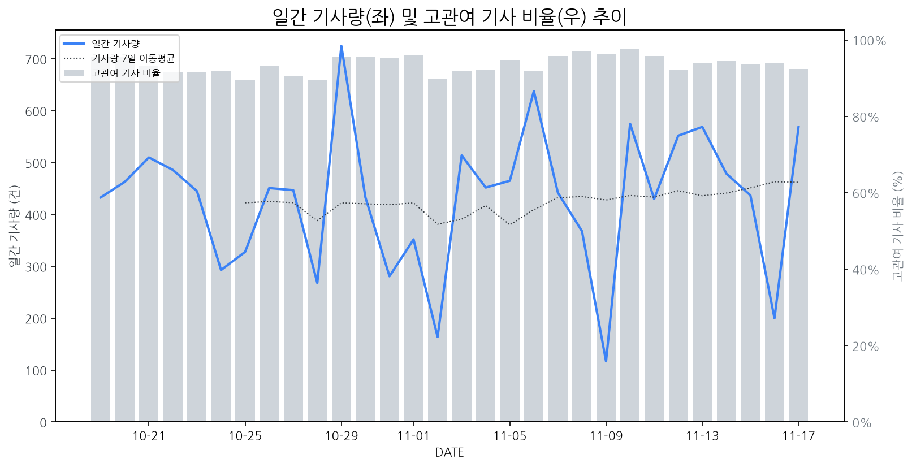

1
시장 활동 지표
기사량 추세 & 이상 징후 탐지
시장의 '전체 기사량'이 평소보다 비정상적으로 급증했는지(Spike)를 차트로 확인하고, LLM이 분석한 급등의 핵심 원인을 파악할 수 있음

고관여 기사란? 산업 연관 키워드로 수집된 기사들 중 디스플레이 키워드에 가중치를 반영하여 도출된 관련성 높은 기사
수집된 기사 수 (2026-11-17)
569
-1% WoW
기사량 변동 수준 (7일 이동평균 대비)
±6.7% 이하
2
오늘의 키워드
급격한 관심 ↑, 주목해야 할 키워드
1
oled
+8.7σ
삼성D·LGD가 중국 게이밍 OLED 시장 선점을 위해 공급을 확대하며 경쟁이 심화되고 있습니다.
Related Metrics
금일 언급량: 78, 전일 대비: +63
Interpretation
중국 게이밍 OLED 시장 공략 가속
Next Step
핵심 토픽 'OLED_Topic' 관련 신호입니다. 3번 섹션(키워드 감성분석)에서 해당 토픽의 감성 변동을 교차 확인하세요.
2
올레드
+7.3σ
LG 올레드 TV가 유럽 소비자 매체 평가에서 전 사이즈 1위를 석권하며 높은 기술력을 입증했습니다.
Related Metrics
금일 언급량: 30, 전일 대비: +30
Interpretation
OLED 기술 우위 재확인
Next Step
'올레드' 관련 상세 기사 및 경쟁사 반응 모니터링
3
tv
+6.6σ
삼성 '더 프레임 프로'가 오프라 윈프리 추천 선물 2년 연속 선정되며 TV 키워드가 급증했습니다.
Related Metrics
금일 언급량: 37, 전일 대비: +33
Interpretation
삼성 브랜드 위상 강화
Next Step
'tv' 관련 상세 기사 및 경쟁사 반응 모니터링
4
xr
+3.6σ
삼성전자의 '갤럭시 XR'가 미래 AI 교육 도입에 활용되며 XR 기술 교육 시장의 부상 가능성을 시사합니다.
Related Metrics
금일 언급량: 14, 전일 대비: +14
Interpretation
XR 디스플레이 수요 증대
Next Step
'xr' 관련 상세 기사 및 경쟁사 반응 모니터링
3
실시간 Risk 키워드
경계해야 할 시그널 탐지
특정 토픽의 부정 감성 점수가 급등할 때 이를 즉시 탐지하고, "근거 기사" 링크를 통해 리스크의 실체를 빠르게 파악할 수 있음
!
AI 기반 시험 부정행위 방지 기술
하락폭: 0.06
- AI 기반 시험 부정행위 방지 기술의 부정적 인식 확대: 최근 '젠슨 황 쇼크'와 '고금리·AI 불확실성' 관련 기사들이 AI 기술에 대한 투자 심리 위축 및 불확실성을 야기하고 있습니다. 이러한 전반적인 AI 기술에 대한 부정적 감성 확산이 'AI 기반 시험 부정행위 방지 기술' 역시 잠재적 위험이나 윤리적 문제에 대한 우려를 증폭시켜 감성 점수 하락을 초래한 것으로 분석됩니다. 디스플레이 제조 기업의 경우, 향후 AI 기술 도입 시 예상치 못한 규제 강화, 기술 도입 지연, 혹은 부정적인 여론에 따른 브랜드 이미지 훼손 등의 리스크에 직면할 수 있습니다.
- 시험 부정행위 방지 기술의 실효성 및 편향성 논란 가능성: '수능 D-1, 단추 달린 옷 피하세요'와 같은 기사는 시험 부정행위 방지를 위한 노력이 강화되고 있음을 시사합니다. 만약 AI 기반 기술이 예상보다 높은 오탐률을 보이거나, 특정 집단에게 불리한 편향성을 드러낼 경우, 기술의 신뢰성에 대한 의문이 제기될 수 있습니다. 이는 디스플레이 제조 기업이 해당 기술을 시험 환경에 적용하려는 시도에 대해 사용자(학생, 감독관 등)의 거부감이나 불신을 야기할 수 있으며, 기술 채택 실패로 이어져 투자 손실 및 기술 개발 로드맵 수정이라는 부정적인 영향을 미칠 수 있습니다.
Current Status
오늘 점수: 0.47, 7일 평균: 0.53
Key Evidence Article (Most Negative)
!
TV_Display_Topic
하락폭: 0.05
- AI 분석 실패 (ResourceExhausted)
Current Status
오늘 점수: 0.47, 7일 평균: 0.52
Key Evidence Article (Most Negative)
4
주요 이벤트 모니터링
실시간 산업 동향 파악을 위한 주요 활동
최근 발생한 주요 기업들의 신제품 출시, 투자 등 주요 이벤트를 제공하여 매일 경쟁사 동향을 확인할 수 있음
AI 인프라 투자가 확대되면서 메모리 반도체 시장 규모가 2026년 1조 달러에 달할 것으로 예상됩니다. 이는 AI 기술 발전 및 고도화에 따른 고성능 메모리 수요 증가에 기인합니다.
Impact
AI 관련 고성능 디스플레이 및 차세대 디스플레이 기술 수요 증가로 이어져 관련 부품 및 소재 시장에 긍정적인 영향을 줄 수 있습니다.
Next Step
AI용 디스플레이 솔루션 및 고대역폭 메모리(HBM)와 연계된 디스플레이 기술 개발 및 파트너십 강화 방안을 모색해야 합니다.
삼성디스플레이와 LG디스플레이의 소극적인 투자 행보로 인해, 국내 디스플레이 소재·부품·장비(소부장) 기업들이 중국 시장으로의 진출을 가속화하고 있다. 이는 한국 디스플레이 산업의 기술 유출 및 경쟁력 약화 우려를 낳고 있다.
Impact
국내 디스플레이 소부장 기업의 중국 이탈은 기술 경쟁력 약화와 공급망 불안정성을 심화시켜, 한국 디스플레이 산업 전반의 위기를 초래할 수 있다.
Next Step
디스플레이 제조 기업은 국내 소부장 기업과의 협력을 강화하고, 투자 및 기술 개발 지원을 통해 경쟁력을 유지하며 공급망 안정화를 도모해야 한다.
샤오미가 후면 디스플레이를 탑재한 '18 프로 맥스' 스마트폰을 국내에 출시했습니다. 이는 스마트폰 디자인 및 기능 혁신의 새로운 시도로 볼 수 있습니다.
Impact
이러한 후면 디스플레이 탑재는 스마트폰의 사용성과 디자인 측면에서 새로운 트렌드를 형성하며, 관련 디스플레이 기술 및 패널 시장의 수요를 변화시킬 수 있습니다.
Next Step
기존 스마트폰 디스플레이 제조 기업들은 후면 디스플레이 적용을 위한 기술 개발 및 생산 능력 확보를 검토해야 합니다.
삼성전자와 LG전자가 오늘(날짜 불명확) 전자 제품 관련 신제품을 출시했습니다. 구체적인 제품 사양이나 출시 모델에 대한 정보는 제공되지 않았습니다.
Impact
두 주요 기업의 신제품 출시는 디스플레이 시장의 경쟁 구도 변화, 새로운 기술 트렌드 형성, 그리고 관련 부품 및 소재 산업에 파급 효과를 가져올 수 있습니다.
Next Step
경쟁사의 신제품 상세 스펙 및 기술 동향을 면밀히 분석하여 자사의 제품 경쟁력을 강화하고 차별화 전략을 수립해야 합니다.
아이폰에서 사용자가 마이크 접근을 허용하지 않았음에도 불구하고 녹음이 되는 오디오 서비스 결함이 발견되었습니다. 이는 기기 작동의 근본적인 오류로 8가지 결함 중 하나로 보고되었습니다.
Impact
이번 사안은 디스플레이 제조 기업에게는 직접적인 디스플레이 성능과는 무관하지만, 스마트폰 완제품의 신뢰성 및 보안 문제로 이어져 브랜드 이미지 하락 및 소비자 신뢰도 저하를 야기할 수 있으며, 이는 장기적으로 디스플레이 수요에도 간접적인 영향을 줄 수 있습니다.
Next Step
디스플레이 제조 기업은 이번 사건과 같은 완제품의 신뢰성 문제를 면밀히 모니터링하며, 자사 디스플레이 패널의 품질 및 보안 안정성을 더욱 강화하고 관련 부품과의 연동성 테스트를 철저히 해야 합니다.